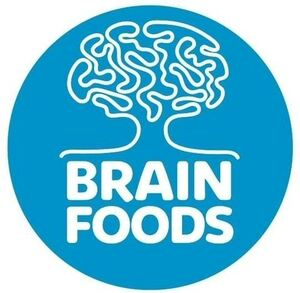

Trade Mark Journal No.2025/031 1 August 2025
WO0000001852166 (1,5,29,30,32)
Office of origin: European Union Intellectual Property Office (EUIPO)
Date of International Registration:21 February 2025
Date of designation in the UK:
21 February 2025

The mark contains the colours light blue and white.
International priority date claimed: 1 November 2024
(European Union Intellectual Property Office (EUIPO))
(019099798)
- Class 1
- Antioxidants for use in the manufacture of food and beverages; artificial sweeteners for the food industry; bacteria for use in food manufacture; caffeine and caffeine extract used in industry; calcium ascorbate for the food industry; chemical and organic compositions for use in the manufacture of food and beverages; chemical seasonings [for food manufacture]; chemical substances for use as food ingredients; cream of tartar for the food industry; emulsifiers for food preparations; enzyme preparations for the food industry; enzymes for the food industry; fatty acids; food preservative compositions; food protein as a raw material; plant extracts, other than essential oils, for the food industry; polydextrose for use in low-calorie foods; polysaccharides for use in the manufacture of foodstuffs; probiotic bacterial cultures for the food industry; protein for food for human consumption [raw material]; proteins for the food industry; proteins for use in the manufacture of beverages; tea extracts for the food industry; vitamins for the food industry.
- Class 5
- Dietetic foods adapted for medical use; dietetic food preparations adapted for medical use; dietetic substances adapted for veterinary use; dietary supplements for human beings; anti-oxidant food supplements; anti-oxidants for dietary use; artificial sweeteners adapted for diabetics; bread products for diabetics; diet capsules; dietary and nutritional supplements; dietary fibre; dietary supplements and dietetic preparations; dietetic beverages adapted for medical purposes; food for diabetics; food supplements; herbal supplements; immunostimulants; medicinal drinks; medicinal tea; nutraceutical preparations for humans; nutritional drink mix for use as a meal replacement; nutritional supplement food bars; nutritional supplement meal replacement bars for boosting energy; powdered nutritional supplement drink mix; probiotic supplements; protein dietary supplements; protein powder dietary supplements; protein supplement shakes; vitamin and mineral supplements; vitamin drinks; vitamin preparations; vitamin preparations in the nature of food supplements; dietary supplements for controlling cholesterol; dietary supplements consisting of vitamins; health food supplements for persons with special dietary requirements; herbal dietary supplements for persons special dietary requirements; vitamin and mineral food supplements; vitamin and mineral preparations; liquid vitamin supplements; mixed vitamin preparations; protein supplements; plant and herb extracts for medicinal use; plant extracts, other than essential oils, for pharmaceutical purposes; extracts of medicinal plants; flaxseed oil dietary supplements; multi-vitamin preparations.
- Class 29
- Ground almonds; vegetable-based snack foods; snack foods based on nuts; meat substitutes; plant-based imitation meat; vegetable-based meat substitutes; berries, preserved; peas, preserved; fruit-based snack food; dried fruit-based snacks; oat-based beverages [milk substitute]; soya milk [milk substitute]; rice milk; vegetable soup preparations; vegetable salads; vegetable juices for cooking; vegetable preserves; vegetables, cooked; vegetables, dried; olive oil; cocoa butter; potato chips; potato-based dumplings; kimchi [fermented vegetable dish]; coconut butter; coconut milk; compotes; edible fats; margarine; olives, preserved; almond milk-based beverages; coconut milk-based beverages; peanut milk-based beverages; oat milk; flavored nuts; fruit chips; bottled fruits; arrangements of processed fruit; snack mixes consisting of processed fruits and processed nuts; fruit salads; pressed fruit paste; onion rings; oils for food; seeds, prepared; jams; sunflower seeds, prepared; sunflower oil for food; soya patties; tofu; soups; tahini; truffles, preserved; falafel; beans, preserved; dates; peanuts, prepared; peanut butter; peanut milk; apple purée; prepared nuts; milk substitutes; non-dairy milk substitutes; processed legumes; preserved pulses; legume salads; processed bean sprouts; dried pulses; legume-based spreads; snack foods based on legumes; coconut, desiccated; blanched nuts; preserved nuts; roasted nuts; candied nuts; seasoned nuts; nut-based food bars; fruit- and nut-based snack bars; organic nut and seed-based snack bars; butter made of nuts; mixtures of fruit and nuts; nut-based snack foods; pastes made from nuts; nut-based spreads; walnut kernels; coconut chips; banana chips; apple chips; kale chips; low-fat potato crisps; fruit, preserved; dried fruit products; fruit-based meal replacement bars; fruit, processed; frozen fruits; savory butters; butter oil; blended butter; cashew nut butter; seed butters; cocoa butter for food; linseed oil for food; vegetable oils for food; sesame oil for food; coconut oil for food; powdered nut butters; almond butter; chia seed oil for food; ginger, preserved; instant soup; soup powders.
- Class 30
- Pancakes; tortillas; wafers; oat bars; flapjacks; foodstuffs made from oats; cereal bars and energy bars; cookies; flour; nut flours; waffles; high-protein cereal bars; sugar-free chewing gum; breath-freshening chewing gum; buckwheat, processed; buckwheat pasta; artificial coffee; sugar; cereal-based snack food; cereal bars; cereal preparations; fruit jellies [confectionery]; cocoa; coffee; processed quinoa; quinoa pasta; bread rolls; crackers; croissants; macaroni; coffee-based beverages; natural sweeteners; oat-based food; rice-based snack food; snack food products made from rice flour; rice crackers; crepes; spices; puddings; popcorn; ravioli; sandwiches; mustard meal; vol-au-vents; soya sauce; soya flour; sauces; spaghetti; iced tea; rusks; sushi; vermicelli [noodles]; bread; halvah; maize flour; tea-based beverages; tea; pita chips; taco chips; rice crisps; chocolate; nut confectionery; snack bars containing a mixture of grains, nuts and dried fruit [confectionery]; confectionery bars; cereal based food bars; biscuits for human consumption made from cereals; biscuits flavoured with fruit; biscuits; pikelets; oat biscuits for human consumption; rice biscuits; chocolate biscuits; processed cereals for food for human consumption; chips [cereal products]; crisps made of cereals; processed cereals; cereal flour; bean meal; food mixtures consisting of cereal flakes and dried fruits; oat clusters containing dried fruit; corn flakes; breakfast cereals; muesli; oatmeal; instant oatmeal; chocolate-coated nuts; chocolate spreads containing nuts; sweeteners (natural -) in granular form; natural sweeteners in the form of fruit concentrates; coffee oils; salts, seasonings, flavourings and condiments; processed herbs; spice extracts; sauces [condiments]; garden herbs, preserved [seasonings].
- Class 32
- Beverages containing vitamins; protein drinks; energy drinks; soya-based beverages (other than milk substitutes); fruit flavored soft drinks; lemonades; carbonated non-alcoholic drinks; aerated juices; non-alcoholic flavored carbonated beverages; non-alcoholic vegetable juice drinks; non-alcoholic fruit juice beverages; vegetable juices [beverages]; smoothies; fruit nectars (non-alcoholic); oat-based beverages (not being milk substitutes); rice-based beverages (other than milk substitutes); energy drinks containing caffeine; energy drinks [not for medical purposes]; concentrates for use in the preparation of energy drinks; protein-enriched sports beverages; isotonic drinks; waters; flavoured waters; mineral and aerated waters.
Novel Plant Foods
Representative: Hristo Plamenov Raychev, 40 Macedonia Blvd.,, floor 5, ap. 17, BG-1606 Sofia, BULGARIA